Released: December 12, 2012
Next Release: December 19, 2012
Brent crude oil prices forecast to decrease modestly in 2013
Prices for Brent crude oil have settled into a fairly well-defined range in the fourth quarter of 2012, moving between $106 and about $116 per barrel since early October. In the fourth quarter of 2011, both the level and the range of Brent prices were similar to current levels (Figure 1). That price environment continued into January of 2012 before prices increased sharply in February and March, resulting in the second consecutive year of substantial first-quarter crude oil price increases. However, despite the similarity between prices in the fourth quarters of 2011 and 2012, physical markets are somewhat less indicative of higher prices than at this time last year. The U.S. Energy Administration's (EIA) December 2012 Short-Term Energy Outlook (STEO) forecasts the Brent spot price to fall during the first quarter of 2013 rather than rise as it did in early 2012. For 2013 as a whole, EIA expects Brent to average $104 per barrel, an $8-per-barrel decrease from the expected 2012 annual average of $112 per barrel.
{kind=link}
In its current STEO, EIA forecasts the call on the combination of global inventories and crude oil from the member countries of the Organization of the Petroleum Exporting Counties (OPEC) to decline through the first half of 2013. This call on inventories and OPEC production is projected to average 30.7 million barrels per day (bbl/d) in the first quarter of 2013 and fall to 29.8 million bbl/d in the second quarter, declines of 0.3 million bbl/d and 1.2 million bbl/d, respectively, from the 2012 fourth quarter. From the fourth quarter of 2011, the call on inventories and OPEC decreased only 0.5 million bbl/d to average 30.8 million bbl/d in the second quarter of 2012.
This reduction in the call on inventories and OPEC is largely the result of growing liquids production from non-OPEC members. In the December STEO, non-OPEC supply is projected to average 53.7 million bbl/d in the second quarter of 2013, about a 0.8-million-bbl/d increase from the expected fourth-quarter average. Forecast non-OPEC production growth is largely driven by expected increases in production from U.S. tight oil formations and Canadian oil sands. Last year, geopolitical events in Sudan and Syria disrupted production and non-OPEC supply was 0.2 million bbl/d lower in the second quarter of 2012 from the fourth quarter of 2011.
EIA also expects that OPEC crude oil production in the first half of 2013 will slightly outpace the combined call on inventories and OPEC crude oil production, leading to expected global inventory builds during the first half of 2013.
Notwithstanding expectations for easing in physical markets and growth in global spare capacity during 2013, current macroeconomics are uncertain and there are risks to the forecast that could push prices higher or lower. EIA projections do not assume any significant economic deterioration in the United States or the European Union (EU) next year, but oil prices could move lower on concerns about the downside risks to future consumption from the so-called "fiscal cliff" in the United States, or from concerns about EU economic stability. Oil prices could move higher as well. In China, the economy has shown signs of improvement over the past two months, as key manufacturing indexes, export volumes, and refining runs have increased, although a sustained rebound is tentative.
In early 2012, geopolitical disruptions helped bolster Brent prices. Similarly, events in Libya contributed to higher prices in early 2011. While EIA does not forecast geopolitical developments, any new geopolitical threat to supply security would affect global crude markets.
Financial market indicators also suggest that market expectations of a first-quarter price increase in 2013 are lower than in the fourth quarter of 2012. While the Brent options market is not sufficiently liquid to provide meaningful information on implied volatility beyond the prompt month, options written on West Texas Intermediate (WTI) futures contracts offer a rough idea about market participants' assessment of the likelihood of a major price move. As of the five trading days ending December 6, implied volatility for the WTI contract settling in March 2013 averaged 28 percent. At current market prices this volatility yields a calculated 95-percent confidence interval of $71 to $113 per barrel. Last year at this time, implied volatility for the March 2012 WTI contract was 41 percent, yielding a much wider calculated 95-percent confidence interval of $69 to $142 per barrel. While Brent prices are higher than WTI prices, Brent implied volatility has also decreased recently, settling at 25 percent on December 6, about a 3-percentage-point decrease from November 1, and its lowest level since the second quarter.
Gasoline and diesel fuel prices fall again
The U.S. average retail price of regular gasoline decreased five cents to $3.35 per gallon, six cents higher than last year at this time. Prices decreased in all regions of the nation for the second consecutive week, with the largest decrease coming in the Rocky Mountain region, where the price fell eight cents to $3.33 per gallon. The West Coast price has decreased 87 cents since reaching a high for the year in October, and is now $3.54 per gallon, down seven cents from last week. The East Coast, Midwest, and Gulf Coast prices all declined four cents from last week, to $3.42 per gallon, $3.28 per gallon, and $3.12 per gallon, respectively.
The national average diesel fuel price decreased four cents to $3.99 per gallon, 10 cents higher than last year at this time. The U.S. average diesel price has been below the $4-per-gallon mark three out of the last five weeks. Prices decreased in all regions of the nation, with the largest decrease coming on the West Coast, where the price declined six cents to $4.04 per gallon. The Rocky Mountain price is $3.94 per gallon, down a nickel from last week. Decreasing four cents, the Midwest price is $3.98 per gallon, and both the East Coast and Gulf Coast prices dropped three cents, to $4.07 per gallon and $3.87 per gallon, respectively.
Propane inventories decline
U.S. propane stocks fell 1.3 million barrels to end at 71.2 million barrels last week, 12.0 million barrels (20 percent) higher than a year ago. Midwest regional inventories dropped by 0.9 million barrels, while Gulf Coast inventories declined by 0.4 million barrels. Rocky Mountain/West Coast stocks dropped by 0.1 million barrels, and the East Coast region gained slightly. Propylene non-fuel-use inventories represented 5.6 percent of total propane inventories.
Residential heating oil prices decrease while residential propane remains flat; wholesale prices see biggest decreases since start of season
Residential heating oil prices declined during the period ending December 10, 2012. The average residential heating oil price fell 4 cents to $3.96 per gallon, nearly 10 cents per gallon higher than the same time last year. Wholesale heating oil prices decreased by 16 cents per gallon last week to $3.06 per gallon, 8 cents per gallon more than last year at this time.
The average residential propane price was unchanged from last week's price of $2.41 per gallon, 44 cents per gallon lower than the same period last year. Wholesale propane prices decreased by 8 cents to $0.83 per gallon for the week ending December 10, 2012, 60 cents per gallon lower than the December 12, 2011 price.
Text from the previous editions of This Week In Petroleum is accessible through a link at the top right-hand corner of this page.
| 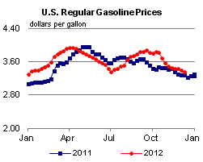 | 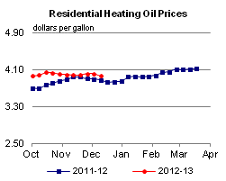 | ||||||
| 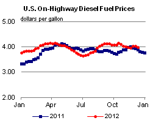 | 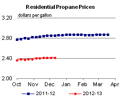 | ||||||
| Retail Data | Change From Last | Retail Data | Change From Last | ||||
| 12/10/12 | Week | Year | 12/10/12 | Week | Year | ||
| Gasoline | 3.349 | Heating Oil | 3.961 | ||||
| Diesel Fuel | 3.991 | Propane | 2.411 | ||||
| 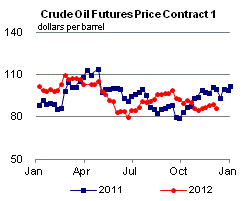 | 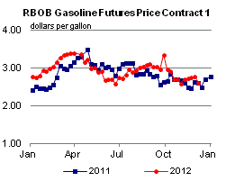 | ||||||||||||||||||||||||||
|
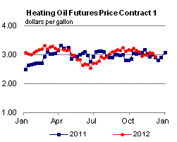 | ||||||||||||||||||||||||||
| *Note: Crude Oil Price in Dollars per Barrel. | |||||||||||||||||||||||||||
| 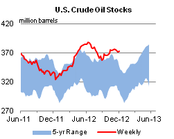 | 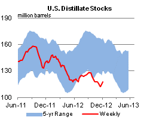 | ||||||
| 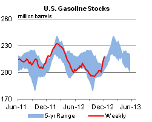 | 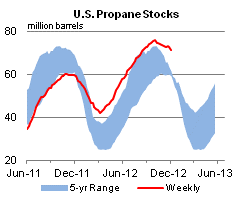 | ||||||
| Stocks Data | Change From Last | Stocks Data | Change From Last | ||||
| 12/07/12 | Week | Year | 12/07/12 | Week | Year | ||
| Crude Oil | 372.6 | Distillate | 118.1 | ||||
| Gasoline | 217.1 | Propane | 71.183 | ||||